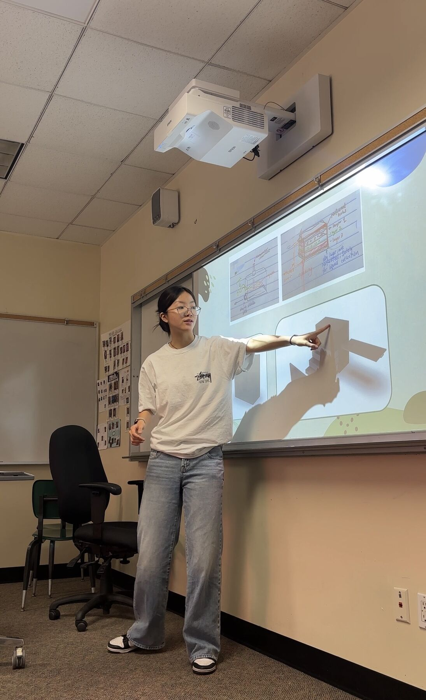

Vermighty
Founder · 2025 - present
Vermighty is a hybrid thermophilic and vermicomposting system I designed, engineered, and built to test whether the two processes can work sequentially at a micro-scale. The system uses heat first for faster decomposition, then worms to improve compost quality.
Early Vermighty Design Sketches
I’m currently testing Vermighty on my high school campus with $700 in funding from the Sabrina Zhang Award, and I’ve presented the project at our Earth Day event, Terrapalooza.
Presenting Vermighty at Terrapalooza
Assembling Vermighty on Campus
I’m also partnering with Epicurean, our school food service, to collect leftover food for compost testing. Once the compost is ready, I give it to our school’s Poly Planters club to use in their garden beds, creating a small circular system on campus.
Location of Vermighty to
Location of Poly Planters garden beds
My long-term goal is to build Vermighty into the school curriculum so other students can continue running and developing it beyond my own involvement. I’m currently working toward that goal through an Independent Study with a teacher focused on developing Vermighty’s curriculum and long-term implementation.